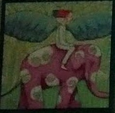
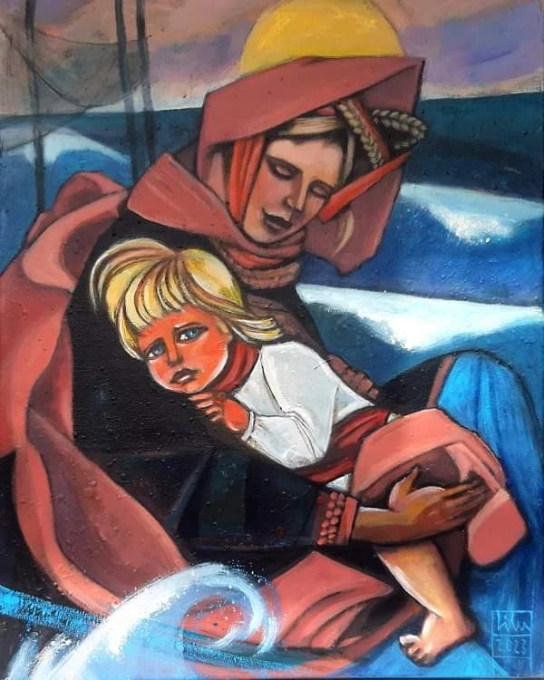
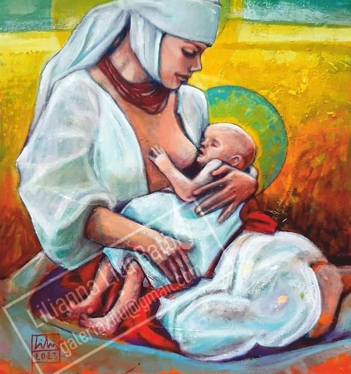

Obrazy Lilianny Lilu Batory
Cztery cykle i rękodzieło. Kliknij obraz, żeby go powiększyć.
Anioły z ludzką twarzą
Z cyklu 366 obrazów „Anioł Stróż na każdy dzień roku” i innych aniołów z pracowni.




Madonny świata
Cykl 12 obrazów o macierzyństwie, miłości i opiece w najodleglejszych zakątkach ziemi. Akryl, 2023.




Kocia Ludzkość
Koty z charakterem, z których powstał kalendarz autorski.


Twarze
Portrety i twarze z pracowni.


Rękodzieło
Ręcznie malowane przedmioty.

Nowe obrazy Lilianna pokazuje na Instagramie @galeria.lilu i na Facebooku.
Zapytaj o obraz
Napisz, który obraz Cię zainteresował albo jakiego szukasz.